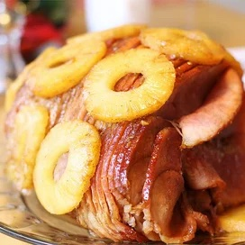

Tangy Honey Glazed Ham Recipe

Description
I came up with the glaze for this ham using ingredients on hand and it's the best I've ever tasted. If you have any
glaze left over, you can add it to the pan drippings with a little flour or cornstarch and make a nice sauce to
accompany the meat. Use the bone and ham trimmings to make soup afterwards.
Ingredients
- 1 (10 pound) fully-cooked, bone-in ham
- 1 ¼ cups packed dark brown sugar
- ⅓ cup pineapple juice
- ⅓ cup honey
- ⅓ large orange, juiced and zested
- 2 tablespoons Dijon mustard
- ¼ teaspoon ground cloves
Steps
- Preheat oven to 325 degrees F (165 degrees C). Place ham in a roasting pan.
- In a small saucepan, combine brown sugar, pineapple juice, honey, orange juice, orange zest, Dijon mustard, and ground
cloves. Bring to a boil, reduce heat, and simmer for 5 to 10 minutes. Set aside.
- Bake ham in preheated oven uncovered for 2 hours. Remove ham from oven, and brush with glaze. Bake for an additional 30
to 45 minutes, brushing ham with glaze every 10 minutes.